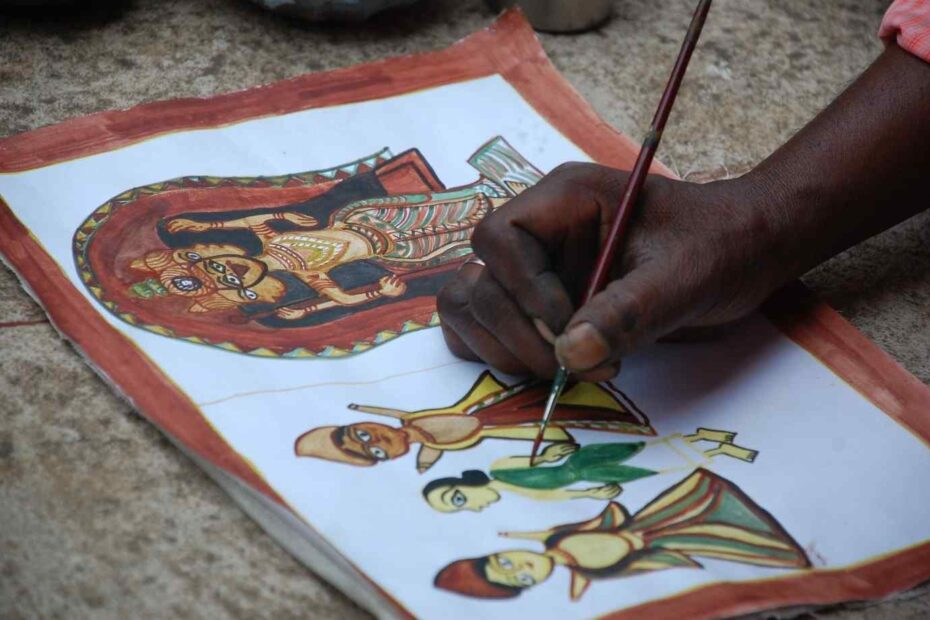

JHARKHAND

Jadopatia painting is a type of folk art that is popular in the villages of Jharkhand’s Dumka district. The word ‘Jadopatia’ means ‘Magic Painters.’ The paintings are created by Bengali painters known as ‘Chitrakars,’ which means ‘picture-makers.’ The paintings tell fascinating stories about the origins of life, life after death, Hindu history and myths, as well as tribal life, rituals, and festivals.Natural elements such as stones, leaves, flowers, and tree bark are utilised to create the colours used in paintings. Earlier, even the paint brushes used to be manufactured locally from goat hairs.
Jadopatia paintings are traditionally done in scroll style, with a series of drawings that tell a tale. Jadopatia is gradually losing its elongated form and surviving in the tourist industry as a single-frame painting.